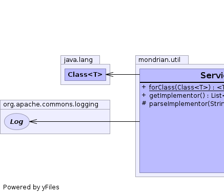

public class ServiceDiscovery<T> extends Object
Java services are described in the JAR File Specification.
Based on the suggested file format, this class reads the service entries in a JAR file and discovers implementors of an interface.
|  |
| Modifier and Type | Method and Description |
|---|---|
static <T> ServiceDiscovery<T> |
forClass(Class<T> theInterface)
Creates a ServiceDiscovery.
|
List<Class<T>> |
getImplementor()
Returns a list of classes that implement the service.
|
protected void |
parseImplementor(String clazz,
ClassLoader cLoader,
Set<Class<T>> uniqueClasses)
Parses a list of classes that implement a service.
|
public static <T> ServiceDiscovery<T> forClass(Class<T> theInterface)
theInterface - Interface for servicepublic List<Class<T>> getImplementor()
protected void parseImplementor(String clazz, ClassLoader cLoader, Set<Class<T>> uniqueClasses)
clazz - Class name (or list of class names)cLoader - Class loaderuniqueClasses - Set of classes (output)